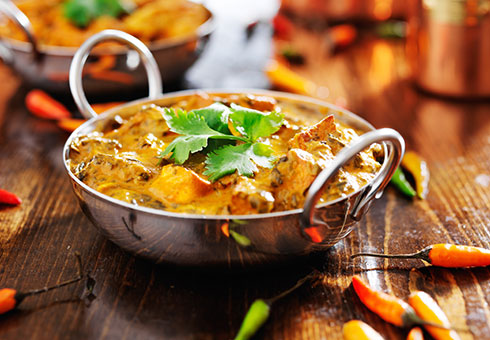

Benvenuto nel mondo del cibo gustoso dell'India
dal momento della costituzione forniamo un buon servizio e una buona qualita degli alimenti. dall'inizio del nostro viaggio garantiamo cibo di buona qualita ai nostri clienti d'onore. siamo situati al centro della citta, vicino alla questura di corso verona. e' facile raggiungerci. qui puoi trovare il posto dove puoi passare il tempo con la tua famiglia. aperto tutti i giorni dalle 0900 alle 2300
